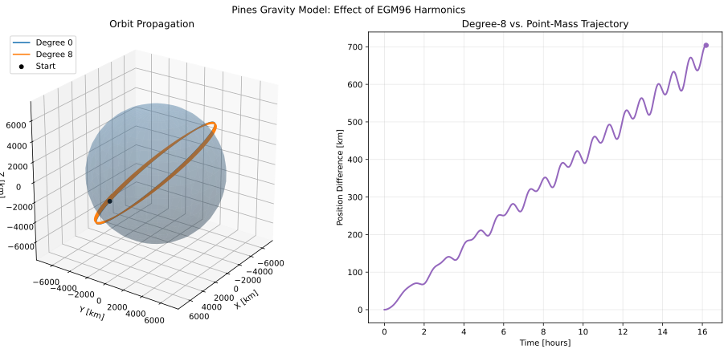

Pines Gravity Model¶
This example demonstrates the use of ASSET’s native Pines gravity kernel for evaluating high-fidelity gravitational acceleration and propagating orbital trajectories. The example uses spherical harmonic gravity coefficients from the EGM96 gravity model and compares a point-mass gravity solution against a degree-8 spherical harmonic solution.
The Pines gravity implementation provides gravitational acceleration through an ASSET VectorFunction interface. This allows the gravity model to be used directly within ASSET dynamics and provides access to derivatives such as the acceleration Jacobian.
The example demonstrates four primary capabilities:
Constructing Pines gravity models at different spherical harmonic degrees.
Evaluating gravitational acceleration and comparing it against point-mass gravity.
Computing derivatives of the gravitational acceleration VectorFunction.
Propagating orbital trajectories using point-mass and spherical harmonic gravity.
Note
The example uses publicly available EGM96 gravity coefficients. The coefficient file is loaded from the repository’s native data directory. The gravity model is evaluated in a fixed body-centered coordinate frame. Earth rotation and time-dependent transformations between inertial and body-fixed frames are not included in this example.
Gravity Model¶
The gravitational acceleration is evaluated using the Pines gravity kernel. The kernel includes central gravity and the selected spherical harmonic perturbations.
The gravitational model is parameterized by the gravitational parameter \(\mu\), reference radius \(R_E\), maximum spherical harmonic degree \(N\), and a set of fully normalized spherical harmonic coefficients.
The constants used in this example are
The gravity coefficients are read from the EGM96 coefficient file.
The gravity model is constructed using astro.PinesGravity, which
accepts the coefficient file, maximum degree, gravitational parameter,
reference radius, and coefficient normalization convention.
The lru_cache decorator ensures that each requested gravity model is
constructed only once. This avoids repeatedly parsing the coefficient file
when the same harmonic degree is used for multiple acceleration evaluations
or propagations.
Gravity Evaluation¶
The first part of the example evaluates gravitational acceleration at a single position. The selected position is
For comparison, the point-mass gravitational acceleration is calculated analytically using
where
The Pines gravity kernel is evaluated at spherical harmonic degrees 0, 2, 8, and 20. Degree zero represents the central point-mass contribution, while increasing the maximum degree includes additional spherical harmonic terms.
The acceleration magnitude and difference from the analytical point-mass solution provide a basic comparison of the gravity models. The difference measures the perturbing contribution relative to central gravity at the selected position.
Acceleration Derivatives¶
In addition to evaluating acceleration, the Pines VectorFunction interface can provide derivatives of the gravitational acceleration.
For a position vector \(\mathbf{r}\), the acceleration Jacobian is
This derivative describes how the gravitational acceleration changes with position and is useful for sensitivity analysis, variational equations, and gradient-based optimization.
The compute_jacobian method returns both the acceleration and its
Jacobian with respect to the input position.
Orbital Dynamics¶
To demonstrate the use of the Pines gravity kernel in an ASSET propagation, the gravitational acceleration is incorporated into a six-state orbital dynamics model.
The state is defined as
where \(\mathbf{r}\) and \(\mathbf{v}\) are the position and velocity vectors, respectively.
The equations of motion are
The acceleration function includes central gravity and the selected spherical harmonic perturbations.
The dynamics are implemented using oc.ODEBase.
The gravity model is passed directly into the dynamics constructor. This preserves the ASSET VectorFunction representation of the acceleration and allows the resulting ODE to be integrated using ASSET’s numerical integrators.
Initial Conditions¶
The propagation begins with a circular orbit at an initial radius of \(7000\) km. The orbit is inclined by \(51.6^\circ\), representative of an inclined low Earth orbit.
For a circular point-mass orbit, the initial velocity magnitude is
The initial position and velocity are
The initial state contains seven entries because the integrator’s trajectory output includes time as an additional variable. The ODE itself contains six state variables.
The orbital period of the corresponding point-mass circular orbit is
The propagation duration is selected as ten orbital periods.
Orbit Propagation¶
Two gravity models are propagated using the same initial conditions:
Degree 0: central point-mass gravity.
Degree 8: EGM96 spherical harmonic gravity through degree 8.
Both models use an ASSET integrator with a nominal integration step of 30 seconds and an absolute tolerance of \(10^{-8}\).
The resulting trajectories contain position, velocity, and time histories. The two trajectories can therefore be compared at matching output times.
Point-Mass Propagation Check¶
A separate propagation using the degree-zero model checks the expected half-period behavior of a circular orbit.
After half an orbital period, a circular two-body trajectory should reach the position opposite its initial position:
The position error is calculated as
This provides a basic numerical check of the degree-zero gravity propagation against the expected circular-orbit geometry.
Trajectory Comparison¶
The difference between the degree-8 and degree-zero position histories is calculated at each output time:
where \(\mathbf{r}_{8}\) is the degree-8 position and \(\mathbf{r}_{0}\) is the point-mass position.
The comparison illustrates the accumulated trajectory separation caused by the spherical harmonic perturbations included in the degree-8 model.
The plotting routine displays the two propagated trajectories around a spherical representation of Earth, along with the position difference as a function of propagation time.


Comparison of point-mass and degree-8 Pines gravity propagation over ten nominal orbital periods.¶
Earth Surface Visualization¶
For visualization, a spherical Earth surface is generated using the reference radius \(R_E\). The surface is not used in the gravity calculation; it is included only to provide a spatial reference for the propagated trajectories.
The surface is constructed from longitude and latitude coordinates:
where \(\phi\) is latitude and \(\lambda\) is longitude.
The resulting surface is plotted with partial transparency so that both orbital trajectories remain visible.
Full Code¶
The complete Python implementation is included below.
1# -*- coding: utf-8 -*-
2"""
3Example use of ASSET's Pines gravity kernel.
4"""
5
6from functools import lru_cache
7
8import numpy as np
9import asset_asrl as ast
10import matplotlib.pyplot as plt
11from pathlib import Path
12
13vf = ast.VectorFunctions
14oc = ast.OptimalControl
15astro = ast.Astro
16
17MU = 3.9860043543609598e5
18RE = 6378.1363
19
20COEFF_FILE = str(Path(__file__).resolve().parents[1] / "native" / "data" / "egm96.nor")
21
22@lru_cache(maxsize=None)
23def MakePines(degree):
24 """
25 Build each gravity model once; coefficient parsing can take time.
26 """
27 return astro.PinesGravity(COEFF_FILE, degree, MU, RE, "fully_normalized")
28
29class PinesModel(oc.ODEBase):
30 """
31 Two-body state dynamics using Pines gravity.
32
33 The Pines model evaluates gravity at a body-fixed position. This simple
34 example holds that frame fixed and does not model Earth rotation.
35 """
36
37 def __init__(self, gravity):
38 xvars = 6
39 args = oc.ODEArguments(xvars, 0)
40 position = args.head3()
41 velocity = args.segment3(3)
42
43 acceleration = gravity(position) # Includes central gravity.
44 ode = vf.stack([velocity, acceleration])
45 super().__init__(ode, xvars)
46
47def make_earth_surface():
48 # If we had common plotting library, this would go in there
49 longitude = np.linspace(0.0, 2.0 * np.pi, 40)
50 latitude = np.linspace(-np.pi / 2.0, np.pi / 2.0, 20)
51 longitude, latitude = np.meshgrid(longitude, latitude)
52
53 x = RE * np.cos(latitude) * np.cos(longitude)
54 y = RE * np.cos(latitude) * np.sin(longitude)
55 z = RE * np.sin(latitude)
56 return x, y, z
57
58if __name__ == "__main__":
59 position = np.array([4510.0, -3120.0, 5230.0])
60 radius = np.linalg.norm(position)
61 two_body = -MU * position / radius**3
62
63 print("Degree |a| [km/s^2] |a - a_2body| [km/s^2]")
64 for degree in [0, 2, 8, 20]:
65 gravity = MakePines(degree)
66 acceleration = np.asarray(gravity.acceleration(position))
67 difference = np.linalg.norm(acceleration - two_body)
68
69 # Show that the Pines VectorFunction can also provide derivatives.
70 gravity8 = MakePines(8)
71 acceleration, jacobian = gravity8.compute_jacobian(position)
72 print("\nDegree-8 acceleration [km/s^2]:", np.asarray(acceleration))
73 print("Acceleration Jacobian [1/s^2]:\n", np.asarray(jacobian))
74
75 # Circular orbit initial state, inclined by 51.6 degrees.
76 initial_radius = 7000.0
77 initial_speed = np.sqrt(MU / initial_radius)
78 inclination = np.deg2rad(51.6)
79
80 initial_state = np.zeros(7)
81 initial_state[0:3] = [initial_radius, 0.0, 0.0]
82 initial_state[3:6] = [0.0, initial_speed * np.cos(inclination), initial_speed * np.sin(inclination)]
83
84 period = 2.0 * np.pi * np.sqrt(initial_radius**3 / MU)
85 final_time = 10.0 * period
86
87 # Integrate point-mass and degree-8 gravity models.
88 trajectories = {}
89 for degree in [0, 8]:
90 ode = PinesModel(MakePines(degree))
91 integrator = ode.integrator(30.0)
92 integrator.setAbsTol(1.0e-8)
93 trajectories[degree] = np.asarray(integrator.integrate_dense(initial_state, final_time, 2000)).T
94
95 # Degree-zero circular-orbit half-period check.
96 ode0 = PinesModel(MakePines(0))
97 integrator0 = ode0.integrator(30.0)
98 integrator0.setAbsTol(1.0e-8)
99 half_period_state = np.asarray(integrator0.integrate(initial_state, period / 2.0))
100 half_period_error = np.linalg.norm(half_period_state[0:3] + initial_state[0:3])
101 print(f"\nHalf-period position error [km]: {half_period_error:.3e}")
102
103 # Difference between the two trajectories at matching output times.
104 time_hours = trajectories[0][6] / 3600.0
105 position_difference = np.linalg.norm(trajectories[8][0:3] - trajectories[0][0:3],axis=0,)
106
107 # Plot orbits in 3D with Earth for scale, plus the trajectory separation.
108 fig = plt.figure(figsize=(13, 6), constrained_layout=True)
109 orbit_ax = fig.add_subplot(1, 2, 1, projection="3d")
110 difference_ax = fig.add_subplot(1, 2, 2)
111
112 earth_x, earth_y, earth_z = make_earth_surface()
113 orbit_ax.plot_surface(
114 earth_x,
115 earth_y,
116 earth_z,
117 color="steelblue",
118 alpha=0.25,
119 linewidth=0,
120 shade=True)
121
122 colors = {0: "tab:blue", 8: "tab:orange"}
123 for degree in [0, 8]:
124 trajectory = trajectories[degree]
125 orbit_ax.plot(
126 trajectory[0],
127 trajectory[1],
128 trajectory[2],
129 color=colors[degree],
130 linewidth=1.6,
131 label=f"Degree {degree}")
132
133 orbit_ax.scatter(
134 [initial_state[0]],
135 [initial_state[1]],
136 [initial_state[2]],
137 color="black",
138 s=24,
139 label="Start")
140
141 limit = 1.12 * initial_radius
142 orbit_ax.set(
143 xlim=(-limit, limit),
144 ylim=(-limit, limit),
145 zlim=(-limit, limit),
146 xlabel="X [km]",
147 ylabel="Y [km]",
148 zlabel="Z [km]",
149 title="Orbit Propagation")
150
151 orbit_ax.set_box_aspect((1, 1, 1))
152 orbit_ax.view_init(elev=25, azim=35)
153 orbit_ax.legend(loc="upper left")
154 orbit_ax.grid(True, alpha=0.3)
155
156 difference_ax.plot(
157 time_hours,
158 position_difference,
159 color="tab:purple",
160 linewidth=2)
161
162 difference_ax.scatter(
163 [time_hours[-1]],
164 [position_difference[-1]],
165 color="tab:purple",
166 s=30,
167 zorder=3)
168
169 difference_ax.set(
170 xlabel="Time [hours]",
171 ylabel="Position Difference [km]",
172 title="Degree-8 vs. Point-Mass Trajectory")
173
174 difference_ax.grid(True, alpha=0.3)
175
176 fig.suptitle("Pines Gravity Model: Effect of EGM96 Harmonics")
177 plt.show()
Implementation Notes¶
This example illustrates several features of ASSET’s Pines gravity implementation:
Native gravity evaluation: The Pines kernel evaluates gravitational acceleration using spherical harmonic coefficients from EGM96.
Selectable harmonic degree: The maximum degree can be changed when constructing the gravity model.
VectorFunction integration: The gravity model is called directly from an ASSET ODE.
Derivative evaluation: The acceleration VectorFunction provides a Jacobian through
compute_jacobian.Trajectory comparison: The example compares point-mass and degree-8 gravity propagation over ten nominal circular-orbit periods.
The example deliberately uses a fixed body-centered frame. A production high-fidelity Earth gravity propagation would also need to account for the transformation between the propagation frame and the body-fixed gravity frame, including Earth rotation and any desired time-dependent Earth orientation effects.
References¶
Pines, S. “Uniform Representation of the Gravitational Potential and its Derivatives.” AIAA Journal, 1973.
Lemoine, F. G., et al. “The Development of the Joint NASA GSFC and the National Imagery and Mapping Agency (NIMA) Geopotential Model EGM96.” NASA/TP-1998-206861, 1998.